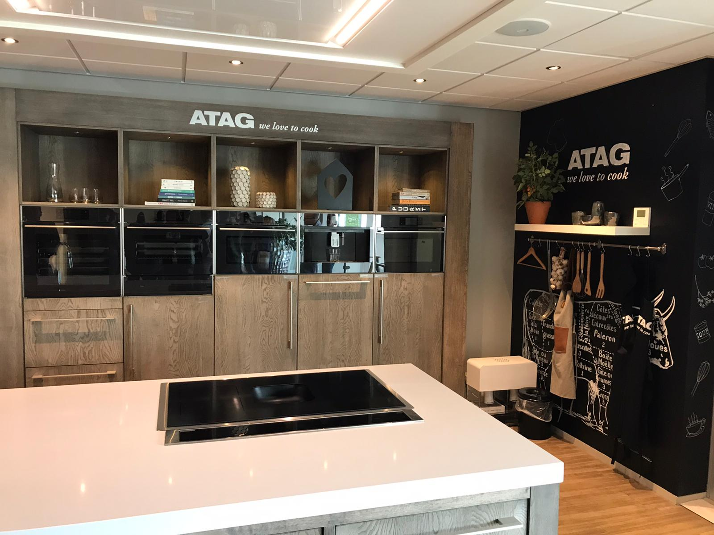

Smart Industry Opdrachten
Hieronder zal ik per aspect van Smart Industry de verscheidene opdrachten en cursusen tonen die ik heb voltooid. Door op de verschillende aspecten te klikken worden de gemaakte opdrachten getoonnd per aspect.
1. Opdracht relatie Smart Industry en Finance and Control
Inleiding
Voor het onderdeel Smart Start van de minor Smart Industry dient er in week 1 een weekopdracht gemaakt te worden waarin de kruispunten tussen de studie die je op dit moment volgt en de minor worden besproken. Op dit moment volg ik de studie Bedrijfseconomie. In dit literatuuronderzoek zal ik allereerst in het kort bespreken wat de minor Smart Industry en de opleiding Bedrijfseconomie inhoud. Vervolgens zal ik enkele raakvlakken bespreken tussen Smart Industry en Bedrijfseconomie.
Smart Industry
“Smart Industry staat voor verregaande digitalisering, het aan elkaar koppelen van producten, machines en mensen én de inzet van nieuwe productietechnologie.” Aldus TNO. TNO is een organisatie, oorspronkelijk opgericht door de overheid, om kennis toepasbaar te maken voor bedrijven en overheden.
Onderstaande afbeelding geeft de kern weer van Smart Industry:

Smart Industry bestaat uit de kern uit: Manufacturing Technologies (ofwel productie technologieën),Network Centric (ofwel een koppeling van hardware, software en mensen die via een netwerk samenwerken) en Digitalization (ofwel analoge data omzetten naar digitale data).
Bedrijfseconomie ofwel Finance and Control
Bedrijfseconomie gaat over het beheersen van de financieel-economische bedrijfsvoering binnen een onderneming. Om dit te kunnen beheersen dien je verstand te krijgen van de financiële cijfers en administratieve processen binnen het bedrijf. Vooral de processen binnen de bedrijfseconomie zijn steeds belangrijker voor de bedrijven. De cijfers van een organisatie kunnen meestal automatisch al vanuit een systeem worden gegenereerd en dit hoeft de bedrijfseconoom vaak niet meer te berekenen.
De relatie tussen bedrijfseconomie en Smart Industry
1. Manufacturing Technologies Job Shop en flexible manufacturingBij Manufacturing Technologies draait het onder andere om Flexible Manufacturing. Flexible Manufacturing gaat over het maken van meerdere producten over één machine. Bij bedrijfseconomie heeft dit de term Job Shop. Job Shop zorgt voor een flexibele omgeving die zich makkelijk kan aanpassen.
2.Network Centric Risicomanagement en cervitization
Risicomanagement is een onderdeel van bedrijfseconomie wat als doel heeft om risico’s van een onderneming tijdig te onderkennen, de impact ervan in te schatten en nodige maatregelen te hebben indien nodig. Een groot risico van een onderneming is een niet werkend ERP systeem. Een ERP systeem is software wat binnen een onderneming gebruikt wordt ter ondersteuning van de processen binnen de organisatie. Als een ERP systeem niet meer werkt betekent dit in het ergste geval dat de organisatie niet haar primaire proces kan uitvoeren. Door het ERP systeem te laten lopen bij een andere organisatie draagt de onderneming het risico over naar een andere organisatie en hoeft de kennis over een ERP systeem niet door de onderneming zelf in huis worden gehaald. Dit onderdeel sluit daarom aan bij Certivization van Smart Industry. Doormiddel van certivization kunnen risico’s worden beperkt.
3. Digitalization Lean concept
Bij bedrijfseconomie wordt, onder andere, bekeken hoe een proces, bijvoorbeeld een productieproces lean kan worden gemaakt. Het lean concept betekent in het kort het volgende: -Verspillingen en verliezen van een proces direct elimineren; -Niet waarde-toevoegende activiteiten zoveel mogelijk reduceren; -Waarde-toevoegende activiteiten optimaliseren. Dit valt bij Smart Industry onder het onderwerp Smart Working. Doormiddel van automatisering en het gebruiken van de nieuwste technologieën kan een proces lean worden. (Lean Six Sixma, 2019) Ook kan doormiddel van het automatiseren van de keten het proces zo worden gemaakt dat er geen voorraden meer aanwezig zijn in een proces. Bij bedrijfseconomie heeft dit de naam JUT (just in time management). Dit houdt in dat de leverancier precies op het moment levert wanneer de organisatie het nodig heeft. Door dit precies op elkaar af te stemmen ontstaan er geen tussenvoorraden en wordt het proces van de organisatie meer Lean ingericht.
4. Management Control
“Het vraagstuk van (management)control gaat over de vraag hoe de opdrachtgever (principal) op basis van enerzijds verschillende doeleinden en anderzijds onvolledige informatie gedrag van de opdrachtnemer (agent) kan sturen zodat de opdrachtnemer handelt in het belang van de opdrachtgever.” (House of Control, 2010-2019). Management Control kan worden geoptimaliseerd door het toepassen van digitalisatie. Hier worden bijvoorbeeld gegevens van een proces opgeslagen door een computer en kan er niet “gelogen” worden door de opdrachtgever.
Bibliografie House of Control. (2010-2019). http://www.house-of-control.nl/vijfkrachtenmodel-porter.html. Opgehaald van House of Control: http://www.house-of-control.nl/vijfkrachtenmodel-porter.html Lean Six Sixma. (2019). Lean Six Sigma wat is lean. Opgehaald van Website van Lean Six Sigma: Sixsigma.nl/wat-is-lean TNO. (2017). Smart Industry door TNO. Opgehaald van Website van TNO: https://www.tno.nl/nl/aandachtsgebieden/industrie/roadmaps/semiconductor-equipment/smart-industry/
Doormiddel van deze opdracht heb ik gewerkt aan de volgende competenties:
2. Opdracht Smart Industry Story
Voor een Projectpartner naar keuze kregen wij in week twee de mogelijkheid om een Smart Industry Story te bedenken. Doordat de opdracht geen vaste lijn had, hadden we zelf de vrijheid om iets te creëren voor de opdrachtgever. Uiteindelijk heb ik samen met twee anderen, die deze minor volgen, onderzoek gedaan over Smart City Duiven voor de gemeente Duiven
klik hier om deze opdracht te bekijken
Doormiddel van deze opdracht heb ik gewerkt aan de volgende competenties:
3. Opdracht Smart Research Value Proposition
- Zotero is een tool die je aan kan sluiten op je internetbrowser. Als je theorie op aan het zoeken bent via je internetbrowser voor je onderzoek kun je doormiddel van Zotero de stukken theorie eenvoudig opslaan op je computer. Ook maakt deze tool het mogelijk om referenties te beheren en uit te wisselen.
- Todoist is een tool die een duidelijke takenlijst creëert. Hierdoor is het makkelijker om je aan een planning te houden en wordt het overzichtelijk wat er nog gedaan moet worden voor de einddatum. Ook laat de tool zien welke taak de meeste prioriteit heeft.
- Via Deepdyve kunnen veel verschillende wetenschappelijke artikelen worden gevonden die gemaakt zijn door academici.
- Google scholar is een zoekmachine die de volledige tekst van wetenschappelijke artikelen over de hele wereld doorzoekbaar maakt.
- Mindmup is een online tool dat het mogelijk maakt om samen met anderen een mindmap te maken. Vooral bij de start van een onderzoek kan door deze tool worden ingespeeld op het creatieve vermogen van de onderzoekers.
3. Opdracht Lean, Agile en Smart Industry
Voor deze opdracht heb ik gekeken naar wat Smart Industry kan toevoegen aan Lean en Agile in ondernemingen. Hiervoor heb ik een Prezi gemaakt die je hier, kan bekijken
Doormiddel van deze opdracht heb ik gewerkt aan de volgende competenties:
4. Opdracht Smart Supply Chain management
Voor deze opdracht heb ik gekeken naar wat supply management is en hoe dit betrokken kan worden bij Smart Industry. Supply Chain management bestaat uit drie verschillende stromen. Voor elke stroom heb ik een voorbeeld opgezocht die laat zien hoe Smart Solutions kunnen bijdragen aan een vebeterde supply chain:
- De productstroom: Het warenhuis van JD maakt gebruik van een intelligent apparatuurbeheers- en controlesysteem dat goederen laadt en lost met onbemande geautomatiseerde voertuigen en het werk doet van ongeveer 180 menselijke werknemers. Pakketten worden door de faciliteit getransporteerd op een geautomatiseerde transportband. De hele faciliteit verwerkt ongeveer 9.000 pakketten per uur, wat ongeveer vier keer de capaciteit is die traditionele, door mensen gerunde sorteercentra kunnen verwerken. (Filmpje/bron)
- De informatiestroom: doormiddel van een production tracker. Dit is een geavanceerde tool voor business intelligence waarmee batches door het hele deur-tot-deur-proces kunt volgen, van het ontvangen van een grondstof tot de verzending ervan, in realtime. De productietrackingsoftware omvat zowel productie- als niet-productiefasen van het proces (productielijnen, inventaris, kwaliteitslaboratoria ...). Op deze manier weet je altijd precies waar een materiaal zich bevindt - maar niet alleen dat. Je kunt ook historische gegevens analyseren en de bevindingen gebruiken voor procesoptimalisatie. (Afbeelding/bron)
- De financiënstroom: Doormiddel van Robotic Proces Automatisation. Verhoogt de juistheid, verkleind de fraude in een financieel proces. (bron/filmpje)
Doormiddel van deze opdracht heb ik gewerkt aan de volgende competenties:
4. Opdracht Blockchain in de Supply Chain
Voor de les van Smart Start in week 5 hebben wij, Jan, Ronald, Vincent en ik, een infographic gemaakt over het gebruiken van blockchain in de supply chain. Hieronder staan twee links naar de infographic. Één link om de infographic te bekijken** en één link om de infographic te bewerken*** .
* Deze infographic is gemaakt met Canva: Canva is een vereenvoudigde website voor grafisch ontwerptool, opgericht in 2012. Het gebruikt een drag-and-drop-indeling en biedt toegang tot foto's, vectorafbeeldingen, grafische afbeeldingen en lettertypen.Canva.com
**Link om te bekijken
- *Herkennen / Analyseren / Diagnosticeren
- *Communiceren / Adviseren
- *Samenwerken / Netwerken
1 Opdracht Video Hello World.
In de eerste week van de minor heb ik voor het aspect Smart Business een video gemaakt. In deze video staat: - Waarom vind je het onderwerp Smart Industry boeiend? - Wat wil je met het onderwerp gaan doen? - Over welke relevante kennis en vaardigheden beschik je al en op welke vlakken ga je jezelf ontwikkelen? - Welke partners en faciliteiten heb je nodig en hoe vind je die?
Doormiddel van deze opdracht heb ik gewerkt aan de volgende competenties:
2. Opdracht Smart Working You
Tijdens deze opdracht moest je om tafel emt mede minor-genoten om je verwachtingen helder te krijgen over de minor Smart Industry. Onderstaand model moest ingevuld worden (dit model is ingevuld over mij)
Doormiddel van deze opdracht heb ik gewerkt aan de volgende competenties:
3. Opdracht Smart Products Klant voor een verzekeraar
Hoe kan een verzekeraar met behulp van IoT haar kosten verlagen?
Antwoord:
1 Veel auto’s hebben tegenwoordig een computer ingebouwd die aan geeft welk onderdeel kapot is. Deze computer zou de informatie in een keer door kunnen spelen naar de verzekering zodat de verzekering niet meer de vraag van de klant hoeft te verwerken.
2 Door woningen uit de rusten met sensoren die water kunnen detecteren en dit doorzetten naar de verzekeraar kan waterschade sneller verwerkt worden.
3 Door een kastje in de auto kan bijvoorbeeld gekeken worden of je wel veilig rijdt en dit kan worden doorgegeven aan de klant
4 Door een chip in het lichaam van een klant kan gezien worden hoe gezond een klant leeft en hoe de klant gezonder kan leven.
Voor verzekeraar Be Informed hebben wij (Mike, Gerwin, Dion en ik) tijdens deze opdracht een Business Model Canvas gemaakt en hebben wij een business case berekend. De business case ging over kastjes die een autoverzekeraar in de auto's van haar klanten plaatst. Hierdoor kon de premie worden aangepast op je rijgedrag. De berekeningen en BMC hiervan kun je vinden in dit
Excel-document. Ook hebben wij voor deze opdrachtgever een nieuwe business case verzonnen. Het betreft een App die een verzekerde moet downloaden in zijn/haar auto. De specificaties van deze app zijn hieronder beknopt weergegeven.

Doormiddel van deze opdracht heb ik gewerkt aan de volgende competenties:
4. Weekopdracht Elk Wijchen
Bij deze minor kregen wij de mogelijkheid om op excursie te gaan bij een bedrijf dat zich veel bezighoud met lean en scrum. Voordat we als excursie naar Elk Wijchen gaan heb ik gekeken naar 5 principes van Lean.
Lean
Lean management gaat over het optimaliseren van processen zodat de klant beter bedient wordt. Lean kent vijf principes die hieronder verder uitgewerkt zullen worden:
Waarde
Iedere organisatie bestaat door de klanten. Zonder klanten zal een organisatie niet kunnen bestaan. Het is daarom belangrijk voor bedrijven dat er wordt nagedacht op welke manier er zoveel mogelijk waarde voor de klant wordt gecreëerd. Het is dan ook belangrijk om de klant goed te kennen zodat je weet wat de klant écht wil. Je klant kennen is de eerste stap om Lean in een organisatie te kunnen toepassen.
Waardestroom
Nadat er een duidelijk klantbeeld is bij een organisatie kunnen de activiteiten worden beoordeeld die waarde toevoegen voor de klant. Een manier om dit te doen is een Value Stream Map: (Voorbeeld ). Met deze diagram wordt duidelijk wat de waardestroom is binnen een proces. Binnen Lean worden er twee activiteiten onderscheiden waar de klant zelf geen waarde aan hecht:
Business value added: activiteiten die nodig zijn om het bedrijf draaiend te houden.
Non Value Added: waardelozen activiteiten die geëlimineerd moeten worden.
Flow
De volgende stap in lean is het verwijderen van de geïdentificeerde verspillingen zodat er in een proces alleen maar waarde toevoegende activiteiten overblijven. Ook is het belangrijk dat de activiteiten zo op elkaar worden gestemd dat er geen opstoppingen zijn in een proces zoals voorraden.
Pull
Als alle verspillingen in een proces geminimaliseerd zijn en alles gericht zijn op het toevoegen van waarde voor de klant. Is het belangrijk alleen te produceren wanneer een klant daarom vraagt. Dit is uitgaan vanuit de Pull. De uitstroom is dan de trigger voor de organisatie om voor nieuwe stroom te zorgen.
Perfectie
Het vijfde principe van lean is streven naar perfectie. Het doel is om een lerende organisatie te zijn die het iedere dag een stapje beter doet. Een mooie manier hiervan is het gebruiken van scrum: klik hier voor meer informatie over scrum
Doormiddel van deze opdracht heb ik gewerkt aan de volgende competenties:
1. opdracht portfolio website maken
Voor deze opdracht heb ik de website gemaakt waar u zich nu op bevind. Ik heb deze website gemaakt op basis van een template maar heb uiteindelijk hier veel aan moeten veranderen.
Doormiddel van deze opdracht heb ik gewerkt aan de volgende competenties:
2. opdracht Javascript koppelen
Voor deze opdracht heb ik Javascript leren koppelen aan een website. Voor deze website hebben we een algoritme neergezet die de grootste gemene deler kan berekenen. Hieronder het resultaat
Doormiddel van deze opdracht heb ik gewerkt aan de volgende competenties:
3. Zelf javascript maken
Voor deze opdracht ben ik zelf aan de slag gegaan met Javascript. Hieronder het resultaat
Weet u de datum van vandaag niet?
Uw geluksgetal van vandaag...
Hoelang tot 2020?
Doormiddel van deze opdracht heb ik gewerkt aan de volgende competenties:
<
4 opdracht Smart Connection API's
Voor deze opdracht ben ik aan de gang gegaan met een website die verteld welk weer het is in een bepaalde regio. Hieronder het resultaat
Doormiddel van deze opdracht heb ik gewerkt aan de volgende competenties:
5. Opdracht Big Data en Machine Learning
Voor deze opdracht ben ik bezig geweest met big data en machine learning. Ik heb hier geleerd en ingezien hoe machine learning werkt en waarom er big data nodig is om machine learning mogelijk te maken. Tijdens deze opdracht ben ik bezig geweest met een afbeeldingsherkenner.
Opdracht geautomatiseerd plantonderhoud
Voor Smart Technology heb ik een Iot-Schakeling gebouwd die de lichtintensiteit, de aardvochtigheid en de temperatuur beheerst van een plant. Voor deze plant is naast een IoT-schakeling ook een PCB gemaakt (een printplaat), hebben we een 3d case gemaakt, en is er gesoldeerd om alle componenten van de IoT schakeling aan elkaar te krijgen. Hieronder de foto's en filmpjes van dit ontwerp

Hier ziet u de IoT schakeling voor de plant. Bij deze IoT schakeling is er een vochtigheidssensor geplaatst (rode pijl), een relay voor de motor die de plant water moet geven (blauwe pijl), een lichtsensor die kan controleren of de plant in het licht staat (groene pijl), een luchtvochtigheids en temperatuursensor (gele pijl) en natuurlijk de arduino of ESP 32(oranje pijl).
Hier ziet u de werking van de lichtsensor. Als ik doormiddel van mijn vinger op de sensor de sensor laat denken dat het donker is gaat er een lichtje aan.

Hier ziet de app die word gebruikt om de plant te monitoren. Maar ook kan er via deze app water worden gegeven aan de plant en kan er licht aan of uitgezet worden. De app die hiervoor wordt gebruikt is Blynk
Hier ziet u het printplaatje (PCB) wat ik heb ontworpen door gebruik te maken van het programma Eagle

Om het printplaatje (PCB) goed te kunnen gebruiken en de IoT sensoren erop te kunnen aansluiten heb ik er componenten op gesoldeerd. Het resultaat daarvan ziet u hierboven.


Om de PCB en sensoren te kunnen beschermen heb ik doormiddel van Solidworks een 3d-ontwerp mogen maken om uit te printen. Hierboven ziet u het ontwerp. Dit bakje is uiteindelijk niet uitgeprint omdat daar niet de mogelijkheid voor was, er mocht namelijk maar 1 bakje per tweetal uitgeprint worden.
Hierboven ziet u de 3d-printer in werking. Tegen het einde van deze video kunt u zien dat de 3d-printer over zijn zelf gelegde plastic heen gaat en het plastic weg trekt van de ondergrond. Dit komt waarschijnlijk omdat de nozzle (stuk waar het geprinte materiaal uitkomt) te laag is ingesteld of omdat het bord waarop gedrukt is niet juist is afgestemd
Uiteindelijk is het wel gelukt om het 3d-ontwerp uit te printen. Hier ziet u het resultaat van alle bovenstaande stukjes bij elkaar. Dus u ziet hieronder de SmartPlant met een 3d-geprint PCB bakje, een PCB met diverse IoT-sensoren. Een andere student van de minor heeft er nog een LCD scherm aan toegevoegd waarop diverse waarden kunnen worden getoond.

Doormiddel van deze opdracht heb ik gewerkt aan de volgende competenties:
Project vulmetingssystemen bij varkensveehouderijen
oor de interne controle en sturing voor veehouderijen is het van belang dat de informatie, die veehouders hebben over hun veehouderij, juist zijn en tijdig worden aangeleverd. Op dit moment zijn de informatiestromen bij deze organisaties niet juist ingericht en wordt de informatie pas geleverd. De veehouder heeft hierdoor geen goed beeld van zijn/haar organisatie en kan daardoor de organisatie lastig sturen en beheersen. Voor het Internethuis is onderzocht hoe de informatie over de voorraden voer kan worden gemeten.Bij dit onderzoek wordt er vooral gekeken naar veehouderijen die varkens houden. De voorraad bij deze veehouders zit veelal in silo’s. In dit onderzoek zal dan ook alleen gekeken worden naar het voer wat in de silo’s bij de veehouderijen staat.Dit onderzoek is gemaakt door Luuk Wenting en Jan Reuvers. Het onderzoek is gemaakt voor de minor Smart Industry aan de hogeschool van Arnhem en Nijmegen.
Klik hier om naar de website te gaan van dit projectDoormiddel van deze opdracht heb ik gewerkt aan de volgende competenties:
Competenties
Een competentie "is het vermogen om een taak met de juiste kennis en vaardigheden te verrichten. In feite staat adequaat handelen daarbij centraal." (Redactie Ensie). Ook bij de minor Smart Industry kreeg ik de kans om aan diverse competenties te werken/ontwikkelen. Hieronder zal ik aangeven welke competenties ik heb ontwikkeld (of aan heb gewerkt) tijdens deze minor en hoe ik dat heb gedaan. De volgende competenties zijn erg belangrijk voor de minor Smart Industry:
- -Herkennen / Analyseren / Diagnosticeren
- - Innoveren / Ontwerpen
- - Projectmanagement
- - Onderzoeken
- - Communiceren / Adviseren
- - Samenwerken / Netwerken
- - Professionaliseren / Verantwoord handelen
Hieronder leest u de ontwikkelingen die ik heb doorgaan bij deze minor. Door op de pijltjes naar rechts of links te klikken onder de competenties kom je bij de volgende competentie.
Herkennen / Analyseren / Diagnosticeren
Deze competentie houdt in dat de student de mate van volwassenheid kan bepalen van een organisatie met betrekking tot Smart Industry. Dit houdt dus eigenlijk in dat de student kan beschrijven hoe Smart een organisatie is. Vooral bij Smart Start heb ik deze competentie kunnen ontwikkelen.
Ontwikkeling
Aan het begin van deze minor was het voor mij lastig om te vertellen wat Smart Industry nou eigenlijk in hield. Bij de eerste opdracht van Smart Start heb ik wel een definitie kunnen opzoeken die voor mij Smart Industry ietwat verduidelijkte. De definitie was: “Smart Industry staat voor verregaande digitalisering, het aan elkaar koppelen van producten, machines en mensen én de inzet van nieuwe productietechnologie.” Tijdens deze minor heb ik veel kunnen leren over de nieuwe technologieën die worden gebruikt en die horen bij Smart Industry. Zo heb ik onder andere meer informatie gekregen over 3d-printen, IoT sensoren, Blockchain en websites bouwen. Deze informatie heb ik veelal zelf moeten opzoeken op het internet en via andere bronnen. Door deze informatie heb ik meer inzicht gekregen in hoe Smart Industry er nou in de praktijk uitziet. Het meest heb ik echter geleerd van de verschillende bedrijfsbezoeken en het onderzoek wat ik heb mogen doen voor het Internethuis. Zo heb ik bij Elk Wijchen kunnen ervaren hoe Lean in de meest verregaande vorm kan worden toegepast binnen een organisatie en heb ik bij NXP mogen horen hoe een geavanceerde productielijn er uitziet. Bij Atag kon ik vooral merken dat ik wel in staat was om de mate van Smart Industry bij een organisatie te bepalen. Zo zag ik bij Atag dat er nog veel via oude methoden werd gewerkt. Zo was er een groot magazijn waar veel mensen nog werkzaam waren. Als dit magazijn meer “Smart” was geweest, was dit een volautomatisch magazijn geweest waar minder producten stonden en dus een kleiner magazijn is (een kleiner magazijn omdat dit een principe van Lean is JIT management) Klik hier voor meer info over JIT. Tijdens het onderzoek heb ik zelf voor een vooroplopend bedrijf een onderzoek mogen doen. Hier heb ik gezien hoe een organisatie niet naar oude methoden kijkt maar met een open blik nieuwe producten en ideeën ontwikkelt. Al met al ben ik hierdoor meer in staat om de mate van Smart Industry bij een organisatie redelijk te kunnen beschrijven. Wel merk ik dat ik op veel gebieden nog niet genoeg informatie heb kunnen krijgen over de verschillende nieuwe technologieën en denk ik dat er meer te leren is over de besturing en beheersing van de organisatie op een manier die bij Smart Industry hoort. Zo heb ik gehoord dat verschillende bedrijven de werknemers zelf hun salaris laten bepalen en omdat dit meer betrekking heeft op mijn studie: Finance and Control vind ik het jammer dat ik hier niet meer informatie over heb kunnen krijgen. Al is deze informatie nog altijd te verkrijgen en ben ik door deze minor wel geïnteresseerd om de nieuwste ontwikkelingen over organisaties bij te houden.
Innoveren / Ontwerpen
Deze competentie houdt in dat de student in staat is om nieuwe technologieën op het gebied van web, data, cloud en AI kan toepassen. Maar ook op het gebied van IoT, Robotica en 3D-printen kan de student de technologieën toepassen in de praktijk. Bij bijna elk aspect van de minor Smart Industry kwam deze competentie terug. Bij Smart Technology, Smart Connection, Smart Business en Smart Project heb ik aan deze competentie kunnen werken.
Ontwikkeling
Bij de start van deze minor had ik geen ervaring met het toepassen van nieuwe technologieën of met technologieën in het algemeen. Vooral door de lessen van Smart Technology en Smart Connection heb ik me meer kunnen ontwikkelen op het toepassen van de nieuwe technologieën. Zo heb ik bij Smart Technology een IoT-schakeling kunnen maken, een PCB en een ontwerp om 3d te printen kunnen maken. Voor Smart Connection heb ik kunnen werken met Javascript, HTML en CSS. Op dit moment beheers ik alleen de basis van al deze technologieën en vind ik het nog wel allemaal lastig om zonder “gebruiksaanwijzing” met deze technologieën te kunnen werken. Zo was mijn PCB niet helemaal juist, kan ik nog niet zelfstandig iets maken met Javascript en vind ik het lastig om te werken met het 3d-modeleer programma Solidworks. Wel snap ik de basis van deze technologieën en denk ik dat ik met meer verdieping in deze gebieden ook meer met deze technologieën kan. Voor Smart Business heb ik verschillende businesscases mogen ontwerpen. Ik heb hier vooral meer geleerd over de positie van een organisatie in de bedrijfsketen. Naast dit allemaal heb ik in de praktijk voor het internethuis ook nog een prototype gemaakt bij dit prototype heb ik kunnen ervaren om na te denken over nieuwe technologieën die wellicht nooit eerder zijn vertoond of waar heel weinig informatie over is. Uiteindelijk ben ik in staat om de geleerde technologieën met behulp van “gebruiksaanwijzingen” toe te passen en heb ik een beeld gekregen hoe deze technologieën werken.
Projectmanagement
Deze competentie houdt in dat de student in staat is om een multidisciplinaire omgeving methoden en technieken op het gebied van projectmanagement te selecteren en toe te passen op een Smart Industry vraagstuk. Vooral bij het project bij het internethuis heb ik deze competentie verder kunnen ontwikkelen.
Ontwikkeling
Voordat ik met deze minor was begonnen ben ik vaker werkzaam geweest in een multidisciplinaire omgeving. Door de verschillende projecten die ik heb mogen doen voor de opleiding Financ and Control ben ik in aanraking gekomen met veel verschillende disciplines. Er was echter nooit een nadruk op de technische omgeving. Door het project met het Internethuis heb ik wel wat meer inzage gekregen in een technisch bedrijf. Maar ook de bedrijfsbezoeken aan NXP en Atag hebben me laten zien hoe een technisch bedrijf er in de praktijk uit ziet.
Ook projectmanagement is in mijn opleiding vaak aan de orde gekomen. Echter heb ik tijdens mijn opleiding nog nooit zoveel vrijheid gekregen voor een onderzoek dan met deze minor. Er waren veel mogelijkheden waar om samen met je projectpartner zelf je eigen onderzoek te ontwikkelen. Ik heb hier van geleerd dat er in de praktijk niet altijd verlangd wordt naar een lang groot verslag waar alles in staat. Maar dat het gaat om een beknopte duidelijke uitkomst. Als dat laatste maar wordt bereikt. Uiteindelijk heb ik ook veel geleerd van de gesprekken met verschillende belanghebbenden. Zo was er een begeleidende docent, een opdrachtgever, informatiegevers en een projectpartner die allen verschillende belangen hadden. Hierdoor is het project een goede voorbereiding geweest op de afstudeeropdracht die ik mag gaan doen in het komende halfjaar (februari 2020 t/m juli 2020).
Onderzoeken
Deze competentie houdt in dat de student in staat is om een praktijkcasus naar een onderzoeksplan te vertalen, deze uit te voeren en de kwaliteit van de uitvoering te evalueren. Vooral bij het project wat ik heb mogen doen voor het Internethuis heb ik deze competentie meer kunnen ontwikkelen.
Ontwikkeling
Bij de start van deze minor heb ik bij Smart Start een opdracht kunnen doen over Smart Research Tools. Deze Smart Research Tools heb ik vervolgens kunnen toepassen bij de deskresearch voor het onderzoek voor het Internethuis. Zo heb ik via
Communiceren / Adviseren
Deze competentie houdt in dat de student communiceert op effectieve wijze en zijn bevindingen naar verschillende doelgroepen kan vertalen. Vooral bij Smart Start en bij het Project bij het Internethuis heb ik deze competentie kunnen ontwikkelen.
Ontwikkeling
Bij de start van deze minor vond ik het lastig om mijn bevindingen te communiceren. Doordat ik weinig kennis had over de onderwerpen vond ik het lastig om de diepte in te gaan. Ook de communicatiemiddelen die ik in het begin van deze minor veelal gebruikte waren Word en Powerpoint. Door Smart Start ben ik echter aan het denken gezet en heb ik meerdere communicatiemiddelen leren te gebruiken zoals Canva.com,
en de website voor het project. Tijdens het onderzoek hebben we ook met verschillende personen gecommuniceerd zowel over de mail en telefoon als in interviews. Hierdoor heb ik me verder kunnen ontwikkelen in de informatie aanpassen op de doelgroep. Dit betekent dat de communicatie naar een veehouder voor ons project ander is dan de communicatie naar de opdrachtgever. Om toch de juiste informatie uit onze interviews te halen voor het project heb ik me moeten ontwikkelen op dit gebied.Samenwerken / Netwerken
Deze competentie houdt in dat de student actief bijdraagt aan een optimale werksfeer binnen en buiten zijn team en een professioneel netwerk ontwikkelt. Ik heb deze competentie vooral kunnen ontwikkelen bij Smart Project
Ontwikkeling
Tijdens het project met mijn projectpartner is er altijd een optimale sfeer geweest. Ook hebben we tijdens het project contact gezocht met verschillende bedrijven via de mail en via de telefoon. Uiteindelijk resulteerde dit ook in een gesprek bij de Heus Veevoeders. Verder heb ik tijdens deze minor veel studenten leren kennen die een technische studie volgen. Ook heb ik tijdens de lessen in deze minor mijn kennis gedeeld als ik hiermee een ander kon helpen. Ik heb onder andere klasgenoten geholpen met het maken van een website, het gebruiken van nieuwe media-tools en als een klasgenoot iets niet kon vinden m.b.t. de minor heb ik hen helpen zoeken. Maar vooral bij de lessen van Smart Business heb ik mijn kennis veel kunnen delen. Dit omdat ik veel van de informatie die we verkregen bij Smart Business al voor deze minor had geleerd bij mijn studie.
Professionaliseren / Verantwoord handelen
Deze competentie houdt in dat de student actief werkt aaan een professionele ontwikkeling. Deze competentie heb ik vooral kunnen ontwikkelen bij Smart Start, Smart Project en Smart Business.
Ontwikkeling
Bij de start van deze minor vond ik het nog weleens lastig om iets goed te presenteren. Bij Smart Start en Smart Business heb ik veelvuldig de kans gekregen om dit te oefenen. Bij de diverse opdrachten heb ik dan ook veelvuldig gepresenteerd. Na deze minor denk ik ook met iets meer vertrouwen voor een groep mensen iets te kunnen presenteren. Verder heb ik bij Smart Project met verschillende mensen kunnen spreken met verschillende disciplines. Ik heb hiervan geleerd dat je je verhaal vaak moet aanpassen aan je doelgroep. Soms is het wat lastiger om direct de diepte in te gaan bij een persoon en soms kan dat juist wel. Soms gaat diegene met wie je praat ook te snel de diepte in ook dan heb ik geleerd om gewoon eerlijk te zijn en te vertellen dat het niet helemaal duidelijk is.
Excursies
Hieronder zal ik laten zien welke excursuies en cursussen ik heb bij mogen wonen voor deze minor

25
September
Elk Wijchen Scrum en Lean
Op 25 september heb ik een rondleiding gekregen bij Elk Wijchen. Ik heb hier een organisatie gezien die volledig lean is ingericht. Verder heb ik een Agile/Scrum treining mogen krijgen door Ali Hajou van Blinklane.

10
Oktober
Atag dag
Op 10 oktober heb ik bij ATAG meer informatie gekregen over het bedrijf en inzicht gekregen in de processen door een rondleiding die ik daar heb gekregen. Ook heb ik de verscheidene technieken gezien die nodig zijn voor de apparaten die ATAG ontwerpt.

15
Oktober
Masterclass Oner Academy
Op 15 oktober heb ik een masterclass mogen bijwonen van de Oner Academy. Ik heb hier geleerd hoe je met stress om kan gaan en wat er in de hersens aan de hand is bij een stressvolle situatie.
25
Oktober
KookWorkshop Wijchen
Op 25 oktober heb ik deel mogen nemen aan een kookworkshop in Wijchen. Hier heb ik geleerd om met een groep van ingrediënten een "innovatief" gerecht te maken.
1
November
NXP Nijmegen
Op 1 november heb ik bij NXP meer inzicht gekregen in een technologische organisatie. Tijdens dit bedrijfsbezoek heb ik veel informatie gekregen over de processen van de organisatie

8
November
De Heus Veevoeders
OP 8 november heb ik samen met mijn projectpartner een interview gehouden met de manager van transport en logistiek bij de Heus Veevoeders. Tijdens dit interview hebben we meer inzicht gekregen in al het logistiek omtrent het veevoederbedrijf.
15
November
TOM-Model
Op 15 november heb ik een workshop gekregen over het Target Operating Model en de inzicht die dit model geeft bij innovaties in een organisatie.
17
December
wereldcafé voor/ over het Open Science Platform (OSP)
Op 17 december heb ik samen met medestudenten en leraren gebrainstormt over een OSP wat mogelijk door de HAN in gebruik gaat genomen worden. Hier heb ik vooral gekeken naar de functies die een OSP moet hebben en de toegevoegde waarde die een OSP kan hebben.


{kind=link}